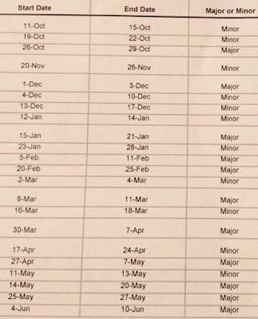

It is the night before The International and all through my house, not a creature is awake EXCEPT ME BECAUSE I AM EXCITED!
But along with TI comes the end of the professional Dota 2 season, where most teams will shuffle their rosters. The difference this year is that Valve is implementing a tournament format where partnered organizers will host tournaments throughout the year, and they will distribute ranking points to the attendees based on their performance. Sound familiar? I happened to outline this exact system 1 month before it was announced.
Today the schedule of when these partnered tournaments are going to happen was released.
A few quick points about the upcoming season:
Here is the schedule:
There are a lot of tournaments; 11 minors, 11 majors. With traditional online qualifiers set to take place at least 45 days before an event, there will be nonstop action from September until the break for The International later in the Summer. Some people are noting that there are too many tournaments, but I feel that this is just right.
There are essentially going to be 2 circuits, the Majors and the Minors. The Majors will attract any top level team to compete because of its large prize pool and possibly large ranking point pool. The top teams will compete nearly once a month (ignoring May). Nothing really changes for them with this new system, they receive their invite to the Major, participate, and wait until the next one. The Minors on the other hand will be host to maybe 2 or 3 top tier teams looking to pad their ranking points. This will leave room for boarder line tier 1 teams to compete more regularly, and to earn more prize winnings. As an example, the most successful team of 2016-2017, OG, played in 14 tournaments where 3 of them where small online events.
This will boost the competitive scene by not only expanding a player's opportunities, but also for the viewer. Giving consitant opportunities to compete will help develop lower tier teams by giving them experience playing against top level teams, and by enticing them not to disband since their consistent top 3 at the Minors could secure them an invite to The International instead of having to battle through a wild qualifier. As an example, Planet Odd placed second at The International 2016, second at 4 large LANs, and first at another large tournament this year, but was eliminated from contention at The International because of one lost best of 3 series. They disband today.
All things considered, I think the over saturation of Majors and Minors will raise quality of the near top tier competitive scene, developing stronger future players.